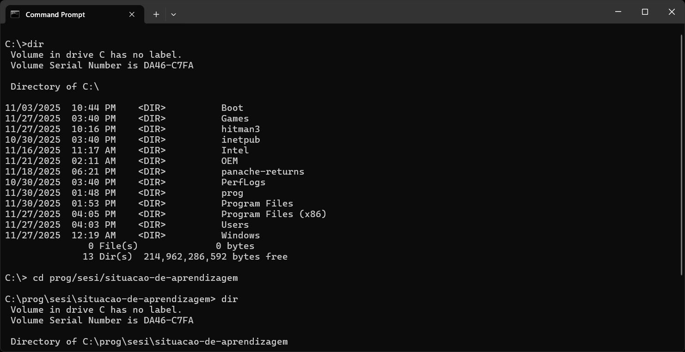
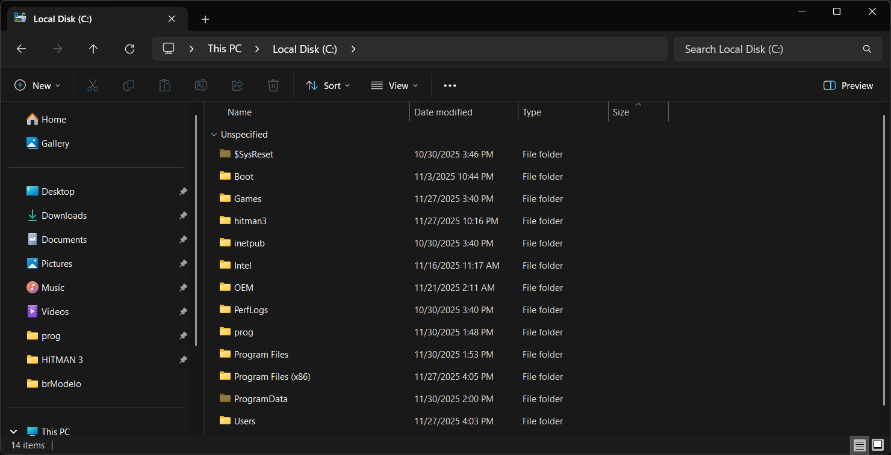

Tecnologia da Informação
Hardware de Computadores
Hardware de computadores refere-se aos componentes físicos que formam a máquina e permitem que ela execute suas funções. Ele abrange tudo o que é necessário para o computador funcionar, desde os processadores até os dispositivos de armazenamento. Os principais componentes de hardware de um computador são:
Placa Mãe
É a principal placa do computador, onde todos os outros componentes, como processador e memória, são conectados

Processador (CPU)
Responsável por executar as instruções e cálculos dos programas. Considerado o "cérebro" do computador.
Memória RAM
Armazena dados temporários enquanto o computador está em uso, permitindo um acesso rápido para o processador.

HD/SSD
Dispositivos de armazenamento de longo prazo, onde o sistema e os dados do usuário são guardados. O HD é mais barato e tem maior capacidade, enquanto o SSD é mais rápido e mais eficiente.
Sistemas operacionais
Um sistema operacional (SO) é o software responsável por gerenciar os recursos do hardware e permitir a interação do usuário com o computador. Ele controla as operações do sistema, como a execução de programas, a gestão de arquivos e a comunicação com periféricos. Alguns dos sistemas operacionais mais conhecidos incluem:
Windows
O sistema operacional mais usado em desktops e laptops, com uma interface gráfica fácil de usar e ampla compatibilidade com software.
Linux
Um sistema de código aberto, utilizado principalmente por desenvolvedores e servidores, conhecido pela sua estabilidade e segurança.

MacOS
Sistema operacional exclusivo da Apple, com uma interface muito reconhecível e ótima integração com o ecossistema de dispositivos da Apple. Conhecido pela sua segurança e otimização.
Android
Sistema operacional baseado no Linux, com foco em dispositivos móveis, como smartphones e tablets.
Sistema de Arquivos
O sistema de arquivos organiza como os dados são armazenados e acessados no computador. Ele estrutura a forma como os arquivos e pastas são dispostos no disco rígido (HD) ou SSD, permitindo que o sistema operacional localize e manipule esses arquivos.
Modo Texto
O Command Prompt (CMD) permite que os usuários interajam com o sistema através de comandos digitados, como navegar por pastas (cd), copiar (copy) ou mover arquivos (move).
Modo Gráfico
O explorador gráfico oferece uma interface visual onde o usuário pode navegar pelas pastas e arquivos com facilidade, usando cliques para copiar, mover ou excluir itens.
Softwares de Escritório
Software de escritório refere-se a um conjunto de aplicativos usados para criar, editar e gerenciar documentos, planilhas, apresentações e outros tipos de trabalho de escritório. Esses programas são essenciais para a produtividade e incluem ferramentas amplamente utilizadas.